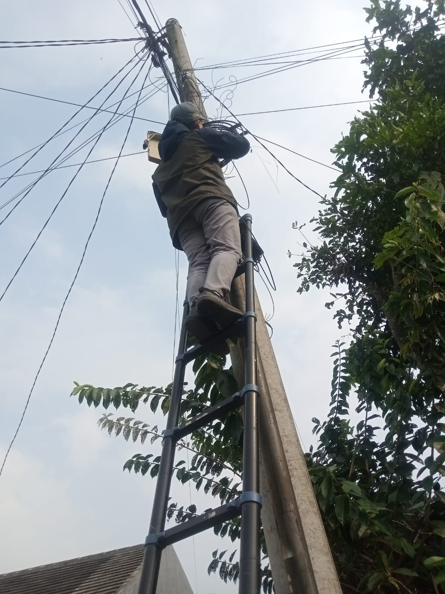
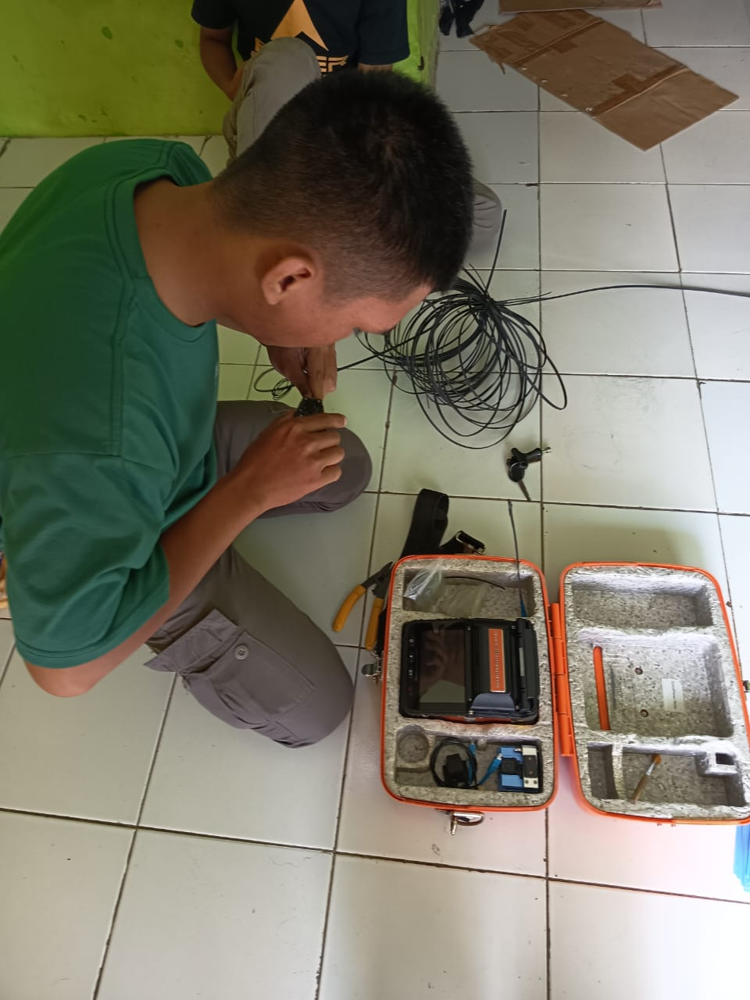
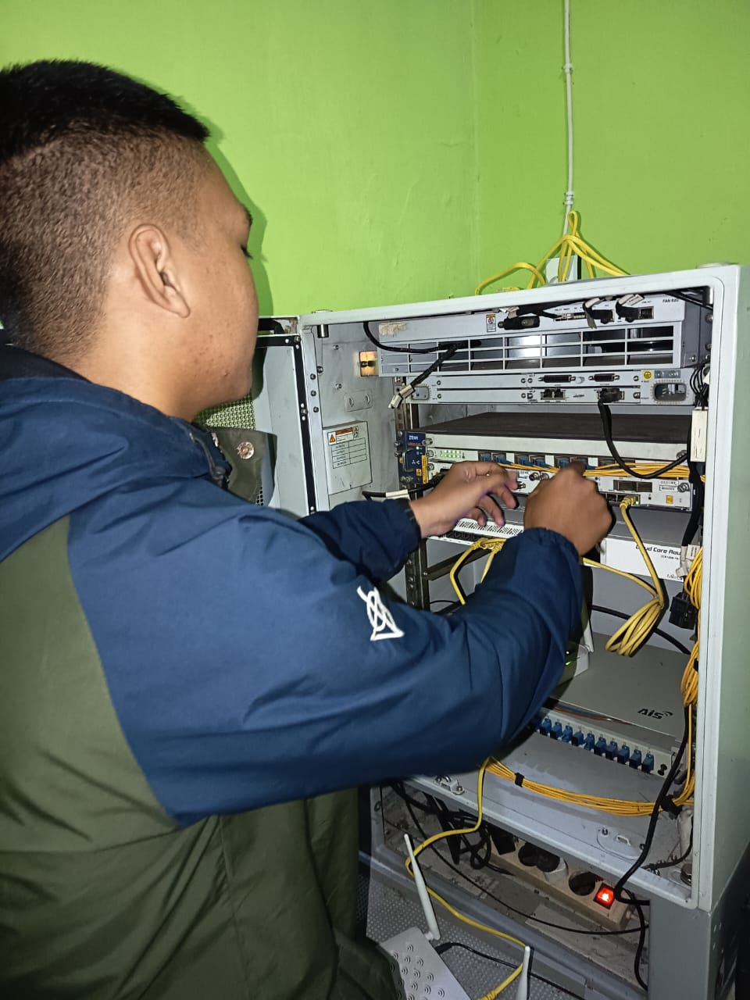

Tentang Saya
Saya memiliki ketertarikan besar pada bidang jaringan dan teknologi informasi, serta pengalaman lapangan dalam instalasi jaringan fiber optic dan kegiatan logistik operasional. Saya terbiasa bekerja dengan ketelitian tinggi, adaptif terhadap situasi lapangan, dan mampu bekerja dalam tim maupun mandiri.
Pendidikan
- SMK BPPI Baleendah — Jurusan Teknik Komputer Jaringan dan Telekomunikasi
- Lulus tahun 2026
- MTS Persis 03 Pameungpeuk
- Lulus tahun 2023
- SDN 01 Rancamanyar
- Lulus tahun 2020
Pengalaman Kerja
PT Pass Internet Indonesia — Teknisi Lapangan (PKL)
- Melaksanakan instalasi jaringan FTTH dari ODP hingga rumah pelanggan.
- Mengoperasikan mesin splicing untuk penyambungan kabel serat optik.
- Melakukan konfigurasi perangkat ONT, termasuk pengaturan SSID, password Wi-Fi, dan PPPoE.
- Melakukan crimping konektor RJ45 untuk kabel LAN pelanggan.
- Memasang dan menata ODP 12 core di area distribusi jaringan.
- Membantu promosi layanan dengan pembagian brosur dan komunikasi langsung ke calon pelanggan.
J&T Express — Freelance Logistik
- Menangani proses bongkar muat paket dari kendaraan ke area konveyor penyortiran.
- Mengelompokkan paket sesuai kode area pengiriman agar distribusi lebih cepat dan tepat.
- Melakukan pemindaian barcode untuk mencatat data paket dengan akurat.
- Bekerja dalam tim dengan ritme cepat dan tetap menjaga ketelitian.
Galeri Dokumentasi



Sertifikasi
Beberapa sertifikat yang saya miliki sebagai bukti kompetensi di bidang jaringan dan teknologi.